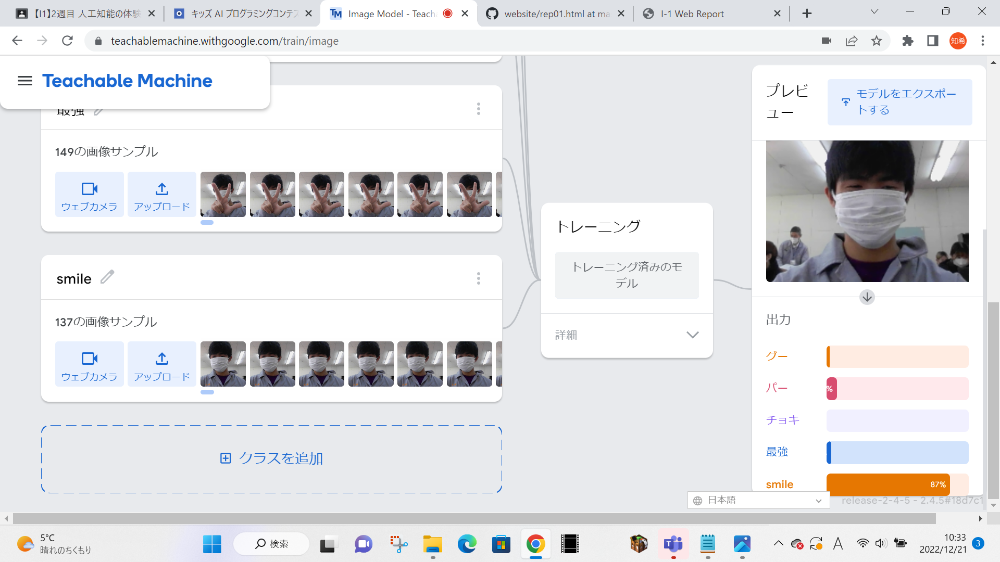

第2週目
2-1 １週目のレポートをHTMLで作る
１週目のレポート
1.内容
先週した実習1週目のレポートをHTMLでウェブ上に作成する。
2.感想
今回は１週前の内容だったので容易く内容と感想を書くことができたが、かなり昔の実習となるとそうもいかないと考え、データを保存しておくことの重要性を感じた。
2-2 機械学習体験

1.内容
キッズAIプログラミングのTeachabele Machineを用いてじゃんけんの手の指をすべて折りたたんだ「ぐー」、「ぐー」の状態から人差し指と中指を立てる「ちょき」、すべての指の関節を曲げずに広げる「ぱー」などの形をを学習させる。
2.感想
機械学習により画像認識を手軽に体験できるものがあるとは知らなかったので、貴重な体験ができたと考えている。どのようにすれば少ない学習データから効率の良い学習ができるかが今後の技術的な課題なのではないかと考えた。
2-3 VR（バーチャルリアリティー：Virtual Reality）の体験
1.内容
VRゴーグルを用いて、バーチャルリアリティを体験する。
2.感想
私は今までにVRゴーグルを使用したことがなかったが、今回使用してみて、想像以上の現実感と反応の正確性に驚いた。しかし、長く使用していると少しばかり画面に酔ってしまった。また、あまり激しく動くのが恥ずかしく感じてしまい、後ろを向くなどの動作を行うことができなかった。